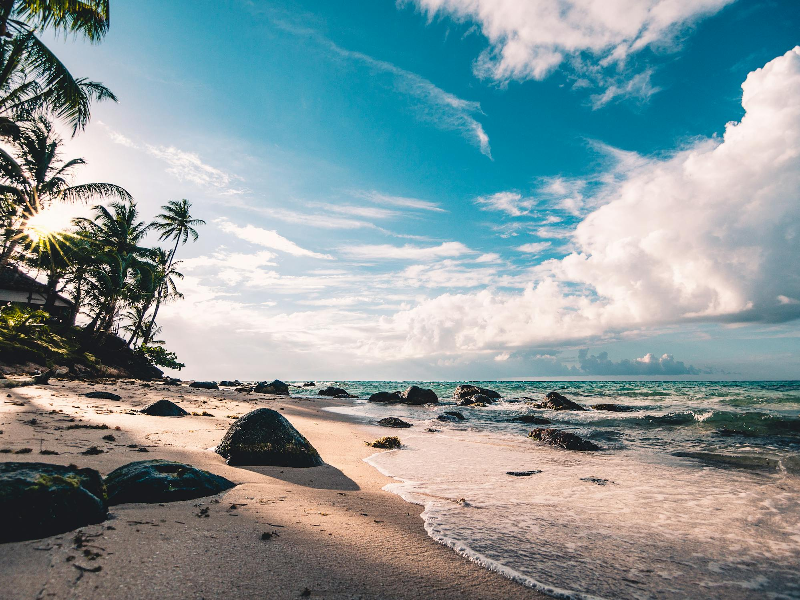
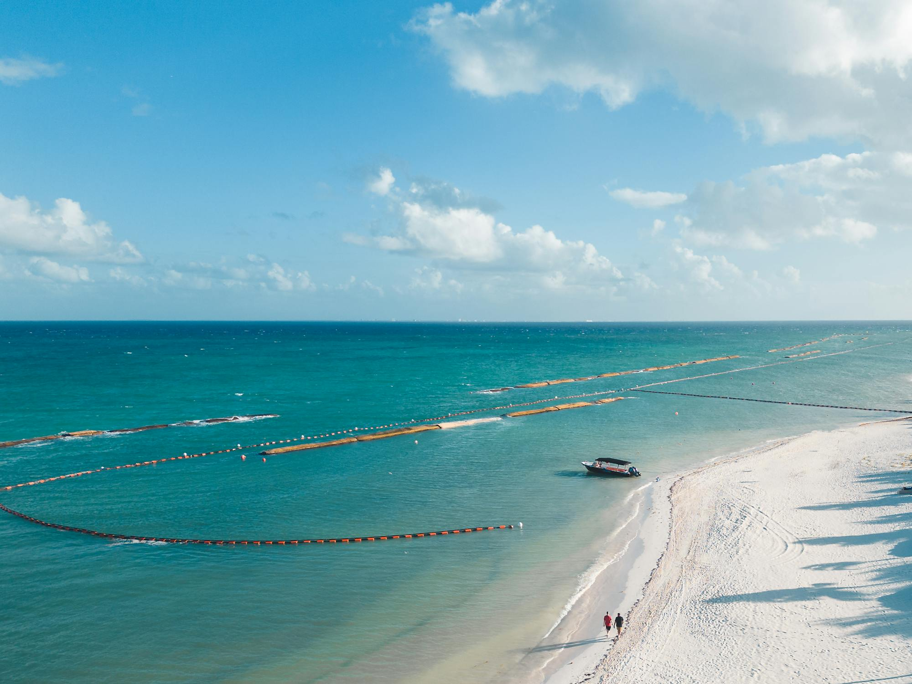
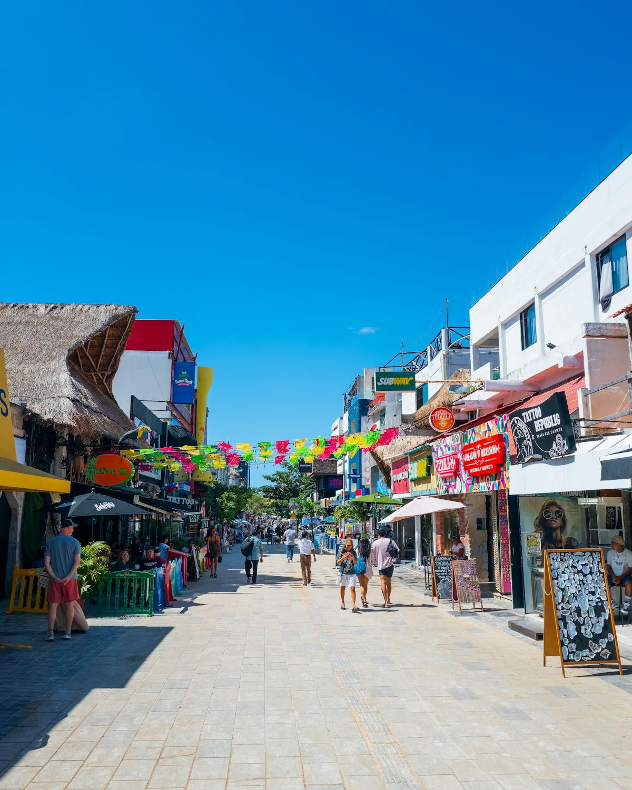
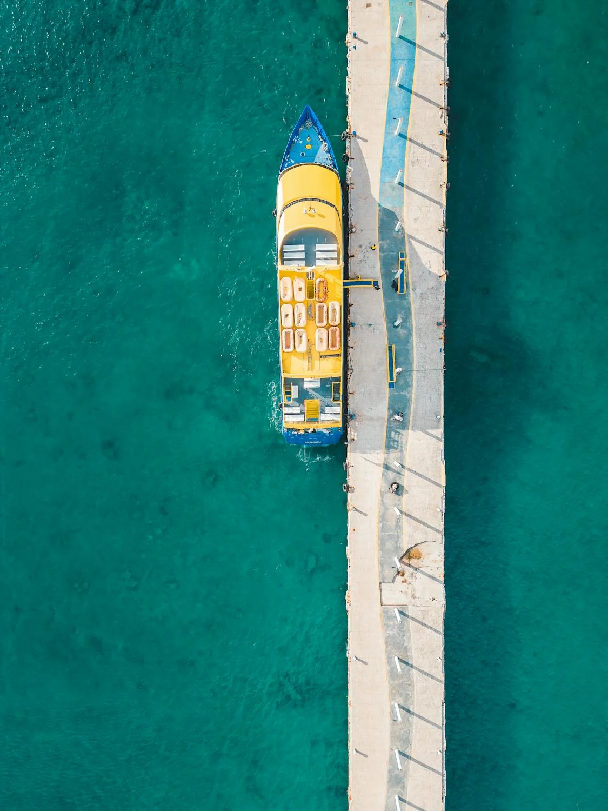
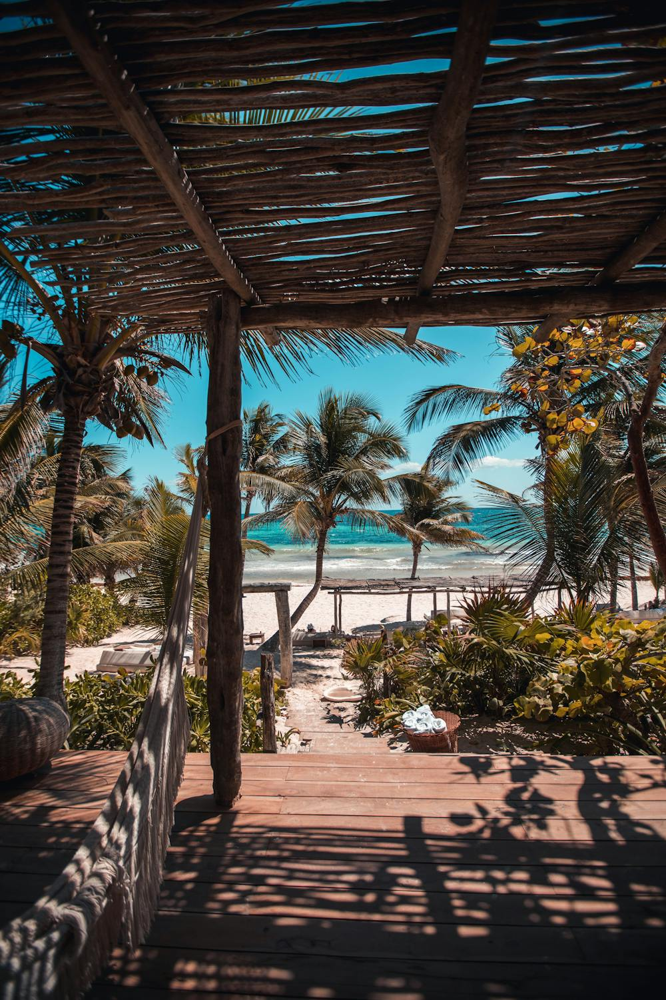

¿Cual es tu proximo destino?
Las mejores Playas del caribe
Relajate y divertite en un ambiente único sólo para adultos. Aprovecha nuestras ofertas y reserva ya en la web oficial de Bahia Principe. Sin gastos de gestión. Disponibilidad 24/7. Mejor Precio Garantizado.
 Playa del carmen
Playa del Carmen es una ciudad turística en el estado de Quintana Roo, México, conocida por sus playas de arena blanca, aguas turquesas y vida nocturna vibrante
Cancun
Cancún (del maya: Kaan kuum 'olla o nido de serpientes') es una ciudad turística mexicana ubicada en el estado de Quintana Roo, cabecera del municipio de Benito Juárez, Es la ciudad más poblada del estado, con 888 797 habitantes según el censo del Instituto Nacional de Estadística y Geografía en 2020.
Tulum
El Pueblo Mágico de Tulum es un punto obligado y la mejor muestra del encanto maya gracias a sus ruinas situadas al borde del Mar Caribe; además de ser la única zona arqueológica que se asienta a la orilla de un acantilado, bajo el cual se encuentra la playa del Paraíso,
- Tarjetas bancarias
- Efectivo
- Dolares